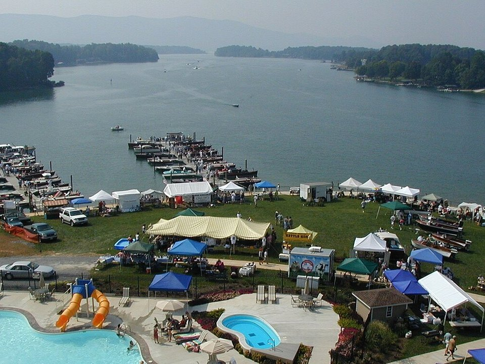

Lakefront · Resort
Bernard’s Landing
A waterfront resort with condos, pools and a marina.
Official details for Bernard’s LandingA Blue Ridge lake with its own airport.
Smith Mountain Lake is Virginia’s largest lake, with 500 miles of shoreline below the Blue Ridge, and it has its own small airport near the shore. Land at Smith Mountain Lake Airport, stay at Bernard’s Landing or Mariners Landing, rent a pontoon boat, have dinner at The Landing or Drifter’s, swim at the state park, and drive up to the Blue Ridge Parkway and the Peaks of Otter.

Time illustration: direct distance at 150 KTAS plus 15 minutes for departure and arrival, matching the discovery page. Use ForeFlight for your actual flight plan.
W91, Smith Mountain Lake, is a non-towered public airport at 892 feet with a 3,058-foot runway near the lake in Moneta.
Smith Mountain Lake Airport, Moneta, VA
Short, narrow runway with terrain and the lake nearby; check performance and winds. Roanoke (KROA) has long runways about 45 minutes away. Arrange a ride with your resort. No live fuel price is shown.
Appalachian flying: ridge turbulence and mountain wave in strong winds, morning valley fog, summer thunderstorms, quickly changing mountain weather and winter icing. About 210 nm from Myrtle Beach.
Rates and availability need travel dates. Summer weekends book early.
A waterfront resort with condos, pools and a marina.
Official details for Bernard’s LandingA lake resort with golf and a marina.
Official details for Mariners LandingLake homes and rentals.
Smith Mountain Lake Chamber for More places to stayPrices and availability for your dates, through our partner Stay22. This is an affiliate link: we may earn a commission at no cost to you. The picks above are never paid.
Reserve weekend dinners.
Dinner with lake views at Bernard’s Landing.
Official details for The LandingA lakeside restaurant at Mariners Landing, easy to reach by boat.
Official details for Drifter’sWaterfront and dock-and-dine restaurants.
Smith Mountain Lake guide for More restaurantsRent a boat for a day on the water.
The farm where Booker T. Washington was born enslaved.
National Park ServiceThis prototype links to the local visitor site. It does not yet match events to your travel dates.
Boating and swimming.
Smith Mountain Lake Chamber for Lake seasonColor on the Blue Ridge.
Smith Mountain Lake Chamber for Fall colorWarm days and quieter water.
Smith Mountain Lake Chamber for Shoulder seasonCheck the local calendar when choosing a weekend, and confirm dates and tickets with the organizer.
A sample lake weekend. No bookings or availability confirmed.
Land at W91 mid-morning.
Lunch by the lake.
A short walk, then back to the airport.
Land at W91, subject to weather and your actual flight plan.
Settle in and get on the water.
Dinner at The Landing.
Pontoon boat day.
State park beach.
Dinner by boat at Drifter’s.
Blue Ridge Parkway drive.
Check takeoff performance for the short, narrow runway.
Afternoon thunderstorms are common in summer; leave in the morning.
A day on a pontoon boat.
Explore.
Dinner in town.
These details make the difference between an appealing list and a usable getaway.
Resort, then a boat rental.
About 210 nm from Myrtle Beach.
3,058 by 50 feet; use KROA if you need more.
May to October.
Research-based selections, not personal-visit endorsements. Researched November 1, 2026. Confirm hours, prices and availability directly with each place before booking. Spotted something out of date, or have a favorite we missed? Email us at hello@wingawayweekends.com.
WingAway Weekends helps you discover the destination. Use ForeFlight and current official aviation information for route, performance, weather, NOTAMs and preflight decisions. Flight planning and PIC responsibility stay with the pilot.